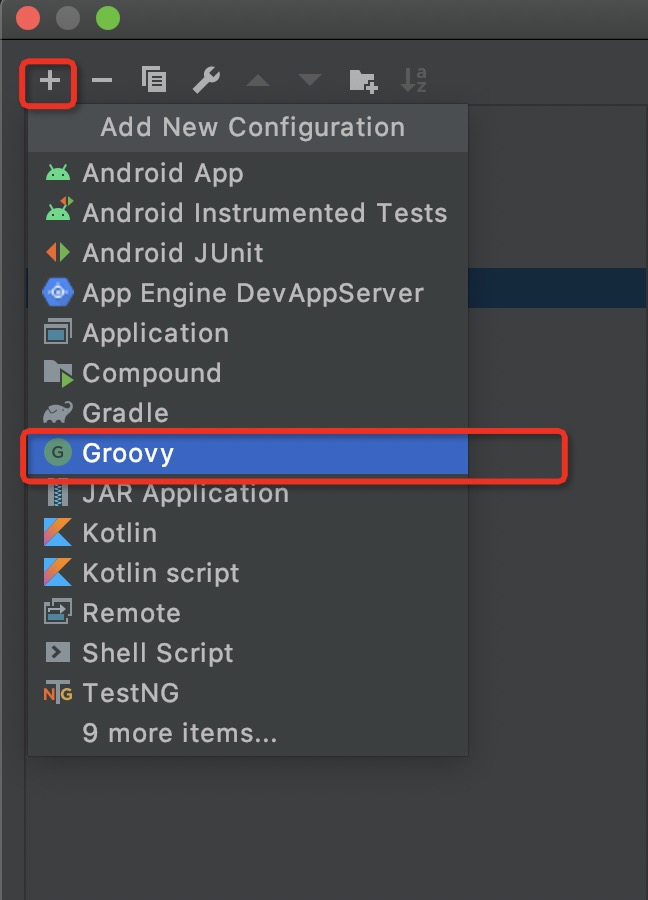

groovy知识梳理
平日即便我们不懂groovy也不影响我们Android开发，因为我们一般不会对build.gradle进行太多编辑。但是如果涉及项目架构调整和app优化，groovy会对你提供很大帮助，可以说是Android高阶的一个必要门槛。
groovy的优点
- 同时支持静态和动态类型。
- 支持运算符重载。
- 本地语法列表和关联数组。
- 对正则表达式的本地支持。
- 各种标记语言，如XML和HTML原生支持。
- Groovy对于Java开发人员来说很简单，因为Java和Groovy的语法非常相似。
- 您可以使用现有的Java库。
- Groovy扩展了java.lang.Object。
groovy的使用
groovy环境安装（mac环境）
推荐使用brew安装，命令如下：
1
brew install groovy
验证安装结果
1
groovy --version
添加环境变量
1
2
3vim ~/.bash_profile
# 添加groovy环境变量
GROOVY_HOME=/usr/local/opt/groovy/libexec
IDE使用
目前推荐使用idea或者AndroidStudio进行编写。下面介绍一下AndroidStudio的groovy运行步骤，idea同理。
as是google专门给Android开发的同学使用的，所以首先我们创建一个Android项目。
groovy module和Android的application module不能同事存在，所以需要在项目单独新建一个javalib module，将此module的build.gradle改为如下样子。
1
2
3
4
5
6
7
8
9
10
11
12//apply plugin: 'java-library'
apply plugin: 'groovy'
dependencies {
implementation fileTree(dir: 'libs', include: ['*.jar'])
// groovy
implementation localGroovy() // 添加groovy本地依赖，这样你才能使用groovy sdk
}
sourceCompatibility = "1.7" // 原有啥样就啥样不用变
targetCompatibility = "1.7"在module里创建一个GroovyTest.groovy文件，然后敲入如下代码：
1
2
3
4
5
6
7
8
9
10import groovy.transform.PackageScope
public class TestGroovy{
// PackageScope 为包内访问
@PackageScope static String str = "Hello World"
public static void main(String[] args){
println(str)
}
}运行groovy文件
4.1 配置 run configuration
4.2 增加groovy run

4.3 配置运行文件
配置完成就可以直接点击运行了！
groovy语法
HelloWord第一步
在自定义文件夹里创建一个HelloWorld.groovy文件，文件内容如下：
1 | // 类定义 |
你没看错这个是groovy代码，不是java代码！可想而知groovy和java语法是有多像，当你忘记了groovy语法时，你可以直接使用java语法写。
访问修饰符
public（同java）
protected（同java）
private（同java）
default（不写访问修饰符）
4.1 类或者方法：default等同public
4.2 变量：default范围在protected和private之间，只能用于本类和子类，不能夸包调用。
数据类型
*1. 基础数据类型
| 类型 | 取值范围 |
|---|---|
| byte | -128到127 |
| short | -32,768到32,767 |
| int | -32,768到32,767 |
| long | -9,223,372,036,854,775,808到+9,223,372,036,854,775,807 |
| float | 1.40129846432481707e-45到3.40282346638528860e + 38 |
| doble | 4.94065645841246544e-324d 到1.79769313486231570e + 308d |
| Boolean | true、false |
*2. String和GString
*2.1单引号中的内容为String
*2.2 双引号中如果有使用参数则这是GString，如provide “androidx.appcompat:appcompat:$version”
*3. 数组
groovy中{}是为闭包使用的，所以你不能像java那样初始化数组。
1 | // java |
*4. 其他和java类似
*5. 类型的封装
因为groovy中一切都是Object，所以它会对原始的引用进行封装，不遵循java的扩展>装箱原则。
1 | void toOut(long arg){ |
*6. 类型对运行时分派的影响
groovy在运行时来选择调用的方法，叫运行时分派；这和java解释执行不同。看下面的例子。
1 | void toOut(Object arg){ |
变量的定义
Groovy中的变量可以通过两种方式定义：使用数据类型的本地语法，或者使用def关键字。
1 | class Demo{ |
方法定义
Groovy中方法的定义也可以通过2种方式：使用返回类型、或者使用def关键字。
1 | class demo{ |
类的定义
同java
条件循环语句
同java
运算符
==
groovy中==相当于java的equals，如果要比较引用地址请使用is（is相当于java的==）。
is
相当于java的==
<=>（比较运算符）
相当于java的compareTo
gradle常用语法
问题记录
brew 安装groovy时出现”Error: Checksum mismatch”错误。
1.1 错误信息
1
2
3
4
5
6Checksum mismatch.
Expected: b065e5e3783954f3e65d8d3a6377ca51649bfcfa21b356b0dd70490f74c6bd86
Actual: edf2ddb225499729d3dc20c460fbc7b05d60c6e205198cbb8b51e1db7c0ff8dc
Archive: /Users/whitewei/Library/Caches/Homebrew/portable-ruby-2.6.3_2.yosemite.bottle.tar.gz
To retry an incomplete download, remove the file above.
Error: Failed to install Homebrew Portable Ruby (and your system version is too old)!1.2 解决办法
1
根据提示信息删除导致中断的文件即可。
xx